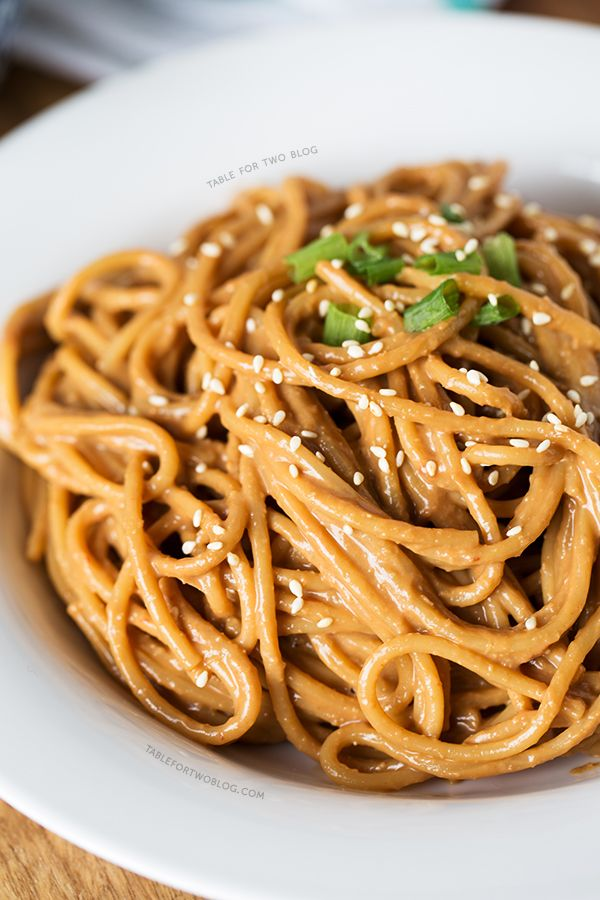

Quick Sesame Noodle

Base Ingredients:
- 2-3 oz. Of your favorite noodle (I like using dried udon noodles)
- 1 Tbs Soy sauce / tamari (or 1/2 Tbs if also using another high-salt ingredient like fish sauce)
- 1 Tbs Toasted sesame oil
Optional Ingredients:
- 1 Tbs Shaoxing wine
- 1/2 Tbs Oyster sauce
- 1/2 Tbs Fish Sauce
- 1 Tsp Sugar
- 1 Tbs Rice wine vinegar
- 1 Tsp Chili crisp
- 1 Tsp Toasted sesame seeds
- 1 Tbs Minced Green Onion
- 1 Tsp Instant Dashi (for flavoring the noodle cooking liquid)
- 1 Tbs Crushed toasted peanuts
Steps:
- If using dashi, add to a pot of water and bring to a boil.
- While the water comes to a boil, prepare and combine all other ingredients in a bowl large enough to add the noodles as well.
- Add the noodles to the pot and cook until done to your liking.
- When the noodles are done cooking, add 1/4 cup of the cooking liquid to the mixing bowl, then drain the noodles and add to the bowl.
- Thoroughly toss the noodles with the other ingredients, serve and enjoy!
Additional Considerations:
- If you prefer cold noodles on a hot summer day, run cold water over them after cooking and before combining with other ingreadients.